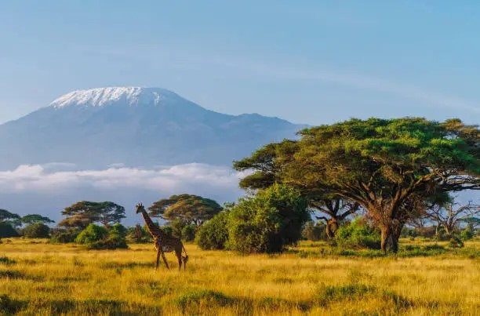

Mount Kilimanjaro: Africa’s Roof Seen from Kenya
Posted on June 25, 2025 | By Jirani Team
Towering at 5,895 meters above sea level, Mount Kilimanjaro is the tallest mountain in Africa — and one of the most photographed natural wonders in the world. Though it lies across the border in Tanzania, many of the most breathtaking views are actually captured from **Kenya’s Amboseli National Park**.
Amboseli offers a rare combination: sweeping elephant herds set against the snow-capped Kilimanjaro backdrop. Sunrise and sunset are magical moments when the clouds part, revealing the summit glowing in golden light.
While climbing Kilimanjaro itself requires a Tanzanian visa and guide, Kenyan travelers can enjoy the view with ease — no hike needed. It’s also a great option for photographers, safari lovers, and travelers looking for iconic landscapes.